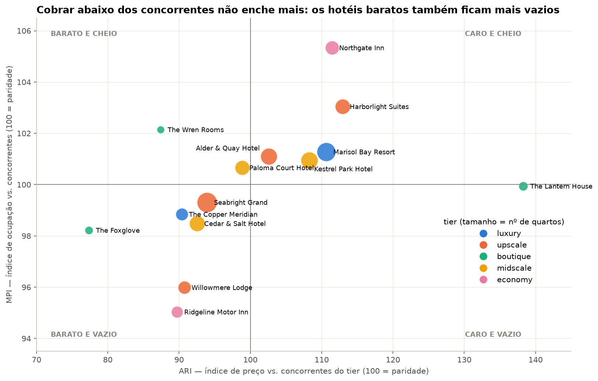
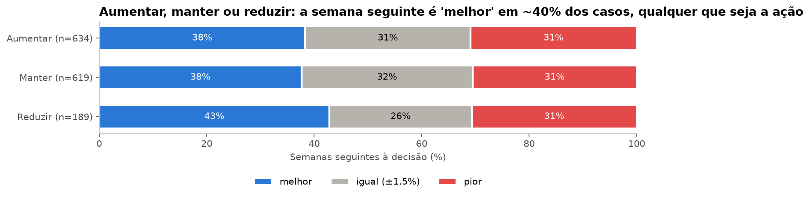
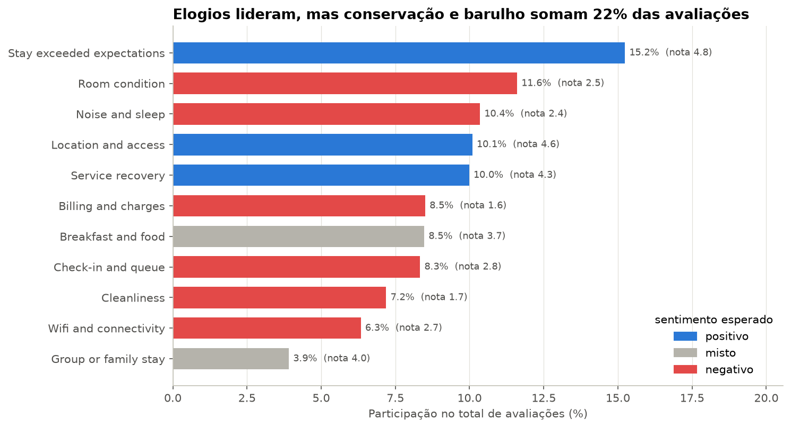

Cada hotel foi comparado só com os hotéis do mesmo tier (seu comp set), pelo RGI: a receita por quarto disponível do hotel dividida pela dos concorrentes (100 = paridade).
| Abaixo dos concorrentes (RGI < 100) | RGI | Preço vs. MARS |
|---|---|---|
| The Foxglove (boutique) | 76 | −19% |
| Ridgeline Motor Inn (economy) | 85 | −6% |
| Willowmere Lodge (upscale) | 87 | −9% |
| The Wren Rooms · Copper Meridian · Cedar & Salt | 89–91 | −3% a −4% |
| Seabright Grand · Paloma Court | 93–99,5 | −2% a −1% |
Acima da paridade: The Lantern House (138), Northgate Inn (117), Harborlight Suites (116), Marisol Bay Resort (112), Kestrel Park (109) e Alder & Quay (104).
O padrão: os hotéis com RGI baixo praticam diárias abaixo dos concorrentes e da diária de mercado (MARS), mas a ocupação deles também fica abaixo ou na paridade. O desconto não está comprando volume. Se os 8 tivessem o RevPAR dos concorrentes, a receita de quartos seria ~9,4 mi USD maior em 2027–2028 (só Copper Meridian e Seabright respondem por ~4,2 mi).
Recomendação: revisar a política de preços dos 8 hotéis abaixo de 100, começando por The Foxglove, Willowmere e Ridgeline, e testar aumentos graduais em direção à faixa MARS.

Foram 1.442 decisões semanais: 634 de aumentar, 619 de manter e 189 de reduzir. Para cada uma, o dataset compara o RevPAR da semana seguinte com o da semana da decisão.
Recomendação: registrar se cada recomendação foi executada e, para medir o efeito, aplicar a regra em parte das semanas ou dos hotéis e comparar com um grupo que não a aplicou.

São 12.077 avaliações, com nota média de 3,31. A distribuição é polarizada: 55,8% têm 3 estrelas ou menos, 29,2% têm 1 ou 2, e 25,1% têm 5.
Recomendação: um plano operacional para as 4 causas (auditoria de folio, inspeção de limpeza, ordens de serviço, kit de sono), priorizando economy e midscale, e responder também aos elogios.

Fonte: Nice Rooms: Hotel Revenue, MARS and Reviews (Kaggle, CC BY 4.0). Análises reproduzíveis nos notebooks 01–04, no banco banco/nice_rooms.db e no painel dashboard/index.html.